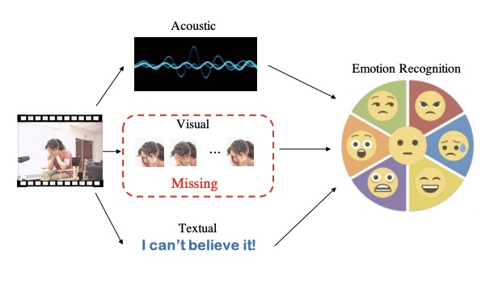

Research Overview
-
Vision and Language


Advancements in deep learning plus large-scale datasets have led to great progress in CV & NLP. Building upon these advances, there has emerged great interest in solving challenges that combine linguistic and visual information, such as: Image/Video Captioning, Cross-modal Retrieval, Multimodal Translation, Visual Relation Understanding, VQA, etc. more details
-
Multimodal Affective Computing
Affective Computing aims to develop new technologies and theories that advance basic understanding of affect and its role in human experience. We focus on building systems that can percept and undertand human emotions through multiple modalities. more details
-
Intelligent Music Computing

Music Intelligent Computing aims to automatically undertand and generate music by artificial intelligent systems. We focus on building automatic melody and lyric generation systems and automatic singing synthesis systems. more details